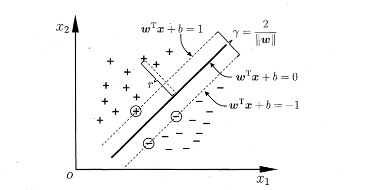
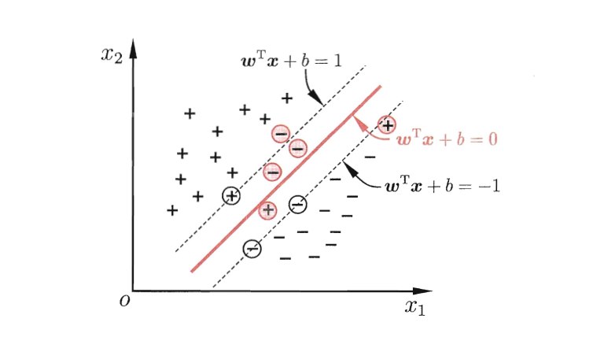
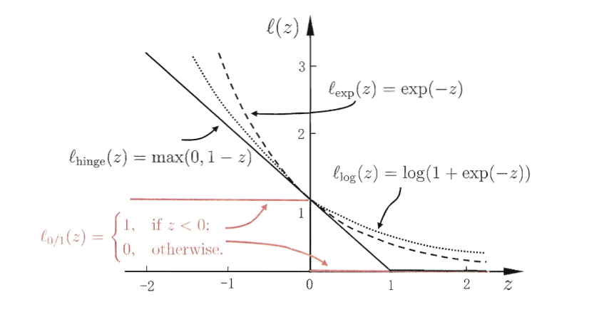
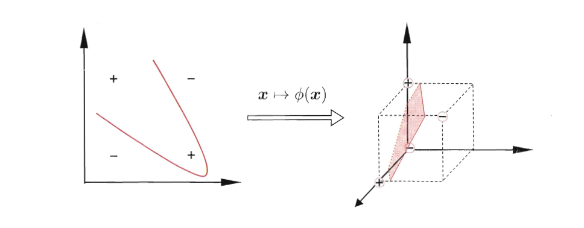

支持向量机（support vector machines）SVM是一种二类分类模型。它的基本模型是定义在特征空间上的间隔最大的线性分类器，间隔最大使它有别于感知机，支持向量机还包括核技巧（kernal trick）这使它成为实质上的非线性分类器。支持向量机的学习的策略就是间隔最大化。 支持向量机的学习算法是求解凸二次规划的最优化算法。
线性可分支持向量机
分隔超平面对应于方程$w \cdot x + b = 0 $
当训练数据集线性可分的时候，存在无穷个分离超平面将两类数据正确分开。线性可分支持向量机利用间隔最大化求最优分离超平面，这时，解是唯一的。存在性唯一性在这里不做证明，有兴趣的可以参考李航老师的《统计学习方法》。
函数间隔
一般的，一个点距离分类超平面远近可以表示分类分类预测的确信程度。在分类超平面$w \cdot x + b = 0 $确定的情况下，$|w \cdot x + b|$ 能够相对的表示点$x$距离分类超平面的远近。$w \cdot x + b $的符号与标记$y$的符号是否一致能够表示分类是否预测正确。因此可以用 $y(w \cdot x + b)$来表示分类的正确性及确信度，这就是函数间隔（function margin）
对于给定的训练数据集$T$和超平面$(w,b)$，定义超平面$(w,b)$关于样本点$(x_i,y_i)$的函数间隔为
$$
\hat{\gamma_i} = y_i(w \cdot x_i + b)
$$
定义超平面$(w,b)$关于训练集$T$的函数间隔为超平面$(w,b)$关于$T$中所有样本点$(x_i,y_i)$的函数间隔之最小值，
$$
\hat{\gamma} = \min_{i=1,\cdots,N} \hat{\gamma_i}
$$
几何间隔
函数间隔可以表示分类的正确性与确信度，但是如果在选择超平面的时候成比例的改变$w$，$b$，超平面并没有发生改变，函数间隔却发生了变化。这个时候，就需要我们对超平面的法向量$w$加以约束，使得间隔是确定的，这是的函数间隔就变成了几何间隔（geometric margin）
其中$||w||$为$w$的$L2$范数
对于给定的训练数据集$T$和超平面$(w,b)$，定义超平面$(w,b)$关于样本点$(x_i,y_i)$的几何间隔
$$
{\gamma_i} = y_i \lgroup \frac{w}{|| w ||} \cdot x_i + \frac{b}{|| w ||} \rgroup
$$
其中$|w|$为$w$的$L2$范数定义超平面$(w,b)$关于训练集$T$的函数间隔为超平面$(w,b)$关于$T$中所有样本点$(x_i,y_i)$的几何间隔之最小值，
$$
\gamma = \min_{i=1,\cdots,N}\gamma_i
$$
因此函数间隔$\hat{\gamma}$跟几何间隔$\gamma$的关系为
$$
\gamma_i = \frac{\hat{\gamma_i}}{|| w ||}
$$
$$
\gamma = \frac{\hat{\gamma}}{|| w ||}
$$
最大间隔分离超平面（硬间隔最大化）
求解一个几何间隔的最大分离超平面，可以表示为下面的最优化问题：
$$
\max_{w,b} \quad \gamma
$$
$$
s.t. \quad y_i \lgroup \frac{w}{|| w ||} \cdot x_i + \frac{b}{|| w ||} \rgroup \ge \gamma ,\quad i = 1,2,\cdots,N
$$
将函数间隔$\hat{\gamma}$跟几何间隔$\gamma$的关系带入上述最优化问题，可以将上述问题转化为
$$
\max_{w,b} \frac{\hat{\gamma}}{||w||}
$$
$$
s.t. \quad y_i(w \cdot x_i + b) \ge \hat{\gamma},\quad i=1,2,\cdots,N
$$
函数间隔 $\hat{\gamma}$的取值不会影响到上述最优化问题的求解，因此我们取$\hat{\gamma} = 1$，同时注意，最大化$\frac{1}{||w||}$和最小化$\frac{1}{2}||w||^2$是等价的，于是可以继续将上式改写为
$$
\min_{w,b} \frac{1}{2} ||w||^2
$$
$$
s.t. \quad y_i(w \cdot x_i + b ) \ge 1 ,\quad i=1,2,\cdots,N
$$
对偶问题
上述的最优化问题为线性可分支持向量机的原始最优化问题，直接求解不是很容易，我们利用拉格朗日对偶性，通过求解对偶问题来间接求得原始问题的最优解，同时可以很自认的引入核函数（Kernel Function），进而引出后续的非线性分类问题。
引入拉格朗日乘子$\alpha_i$建立线性可分支持向量机的拉格朗日函数，
$$
L(w,b,\alpha) = \frac{1}{2}|| w ||^2 + \sum^N_{i=1}\alpha_i(1-y_i(w\cdot x_i+b))
$$
其中$\alpha=(\alpha_1;\alpha_2;\cdots;N)$
将拉格朗日函数分别对$w$，$b$求偏导
$$
\nabla_wL(w,b,\alpha) = w - \sum_{i=1}^N \alpha_i x_i y_i = 0
$$
$$
\nabla_b L(w,b,\alpha) = \sum^N_{i=1} \alpha_i y_i = 0
$$
得
$$
w = \sum_{i=1}^N\alpha_iy_ix_i
$$
$$
0=\sum^N_{i=1}\alpha_iy_i
$$
带入拉格朗日函数得
$$
\begin{align}
L(w,b,\alpha) & = \frac{1}{2} \sum_{i=1}^N \sum_{j =1 }^N \alpha_i \alpha_j y_i y_j x_i x_j + \sum_{i=1}^N \alpha_i (1 - y_i(x_i \sum_{j=1} ^ N \alpha_j y_j x_j+ b )) \\
\\ & = -\frac{1}{2} \sum^N_{i=1} \sum^N_{j=1} \alpha_i \alpha_j y_i y_j x_i x_j + \sum_{i=1}^N \alpha_i
\end{align}
$$
$$
s.t. \quad \sum^N_{i=1} \alpha_i y_i = 0,\quad \alpha_i \ge 0,\quad i=1,2,\cdots,N
$$
SMO算法
SMO表示序列最小优化（Sequential Minimal Optimization）。SMO算法是将大优化问题分解为许多小优化问题来求解。SMO算法的目标是求出一系列$\alpha$跟$b$，一旦求出了$\alpha$，就很容易计算出权重向量$w$。
支持向量
在线性可分的情况下，训练数据集中的样本点中与分离超平面距离最近的样本点构成了支持向量（support vector）。支持向量之间的距离成为间隔（margin）。间隔的大小取决于分离超平面的法向量$w$

上图来自周志华老师《机器学习》一书中的 图6.2 支持向量与间隔
在决定分离超平面的位置的时候，其实只有支持向量在起作用，其他的训练样本点并不起作用。如果移动或者去掉了间隔边界之外的训练样本点，不会对分离超平面的位置产生影响，支持向量的个数一般都很少，因此支持向量机是由很少的重要的训练样本决定的。这也是为什么支持向量机在一些分类问题上速度较快的原因，比如分类一辆汽车跟一只猫咪。但是在汽车里去细分卡车跟轿车的话，支持向量机的效果就没有那么好了。
线性支持向量机
在讨论线性可分向量机的时候，我们都是假设训练样本在样本空间一定是线性可分的，一定存在一个超平面能够将两类不同的数据给完全的分隔开，但是在实际中的数据集这样的方法往往是不成立的，这样我们就需要修改硬间隔最大化时，引入了软间隔最大化。

上图来自周志华老师《机器学习》一书中的 图6.4 软间隔示意图.红色圈出了一些不满足约束条件的样本
软间隔最大化
之前介绍的向量机形式都是要求所有的样本必须满足约束条件$y_i(w^Tx_i+b) \ge 1$，所有的样本都必须正确的划分，这种形式的向量机成为硬间隔（hard marigin），而软间隔（soft marigin）则允许某些样本不用满足上述的约束条件，当去除掉这些特异点后，剩下的大部分样本组成的点一定是线性可分的。
通过引入松弛变量$\xi_i \ge0$，修改硬间隔最大化的约束条件 ，得到如下的约束条件，
$$
s.t. \quad y_i(w\cdot x_i + b) \ge 1 - \xi_i
$$
同样，在最大化软间隔的同时，我们也是希望不满足上述约束条件的样本尽可能的少，对于每一个不满足硬间隔最大化约束但是满足软间隔最大化约束的特异点都引入一个loss代价$\xi_i$,这样就变成了软间隔最大化的最优化问题
$$
\min_{w,b,\xi} \frac{1}{2} ||w||^2 + C\sum^N_{i=1} \xi_i
$$
$$
s.t. \quad y_i(w\cdot x_i + b) \ge 1 - \xi_i, \quad\xi_i \ge 0,\quad i = 1,2,\cdots,N
$$
在关于软间隔最大化另一种表达形式中，我们用$\ell_{0/1}$损失代替上式中引入松弛变量$\xi_i$带来的损失$\xi_i$,因此优化函数可以写为
$$
\min _{w,b}\frac{1}{2} ||w||^2 + C\sum^m_{i=1} \ell_{0/1}(y_i(w\cdot x_i+b)-1)
$$
其中的$C > 0$是一个常数 ，$\ell_{0/1}$是0/1损失函数
$$
\begin{equation}
\ell_{0/1}(z) =
\left \{
\begin{array}
{r@{\quad:\quad}l}
1 & z < 0\\
0 & else
\end{array}
\right.
\end{equation}
$$
由于$\ell_{0/1}$函数是不连续的，因此可以通过其他的连续函数来引入到最大软间隔的最优化问题中，下面举几个常用的例子。
折页损失（hinge loss）
$$
\ell_{hinge}(z) = \max(0,1-z)
$$
若采用hinge loss，则二分类问题的线性支持向量机的优化函数可以写为
$$
\min _{w,b}\frac{1}{2} ||w||^2 + C\sum^m_{i=1}\max(0,1-y_i(w \cdot x_i + b))
$$
对于多分类问题，所求的分类器是一个$k$类的线性分类器。
对于$s = Wx_i + b$，此时的$W \in \mathbb{R} ^{k \times n}$，为一个$k \times n$矩阵，$b \in \mathbb{R} ^{k }$，为一个向量，因此有$s \in \mathbb{R} ^{k }$，$s$中的每个分量表示分类器在该类别中的得分，样本$x_i$的标签$y_i \in \mathbb{R} ^{k }$，若$x_i$属于类别$k$，则$y_i$中除了第$k$个分量外其余分量全部为0。$s_j$表示得分向量s中的第$j$个分量，$s_{y_i}$表示对应$y_i =1$的分量。
单个样本多分类的Hinge Loss 可以表示为
$$
\sum_{j \ne y_i} \max (0,s_j-s_{y_i} + 1)
$$
$k$分类线性分类SVM的Hinge Loss表示为
$$
\min_{W,b} \sum _{i=1}^N \sum _{j \ne y_i} \max(0,s_j - s_{y_i} + 1)
$$
引入正则项得
$$
\min_{W,b} \sum _{i=1}^N \sum _{j \ne y_i} \max(0,s_j - s_{y_i} + 1) + \lambda \sum_k \sum_n W^2_{k,n}
$$
指数损失（exponential loss）
$$
\ell_{exp}(z) = \exp(-z)
$$
对率损失（logistic loss ）
$$
\ell_{log}(z) = log(1+\exp(-z))
$$

上图来自周志华老师《机器学习》一书中的 图6.5 三种常见的替代损失函数：hinge损失，指数损失，对率损失。
非线性支持向量机
核函数
在上面的线性支持向量机的讨论中，假设训练样本的数据集都是线性可分的，存在一个划分超平面可以将数据集给正确分类。 对于非线性的问题往往不好求解，我们还是希望能够转化为线性分类问题来求解，通过将样本从原始空间映射到一个更高的特征空间上，使得训练样本在高维的特征空间上线性可分。
因此用线性分类法求解非线性分类问题的分为两步，首先使用一个变换将原输入空间的数据映射到特征空间，然后在特征空间上用线性分类学习方法从训练数据中学习分类模型。核技巧就属于这样的方法。

上图来自周志华老师《机器学习》一书中的 图6.3 异或问题与非线性映射
幸运的是，如果原始空间是有限维的，那么一定存在一个高维特征空间使得样本可分。
令$\phi(x)$为将$x$映射后的特征向量，因此在高维特征空间中划分超平面的模型函数为
$$
f(x) = w^T\phi(x) + b
$$
其中$w$，$b$为参数模型。类比一般情况下的支持向量，最大间隔分离超平面的模型为
$$
\min_{x,b} \frac{1}{2} ||w||^2
$$
$$
s.t. \quad y_i(w^T\phi(x_i) + b) \ge 1,\quad i=1,2,\cdots,m
$$
其对偶问题是
$$
\max_{\alpha} \sum^{m}_{i=1}\alpha_i - \frac{1}{2}\sum^m_{i=1}\sum^m_{j=1}\alpha_i \alpha_j y_i y_j\phi(x_i)^T\phi(x_j)
$$
$$
s.t. \quad \sum^m_{i=1} \alpha_i y_i = 0，\quad \alpha_i \ge0,\quad i =1,2,\cdots,m
$$
求解上式涉及到$\phi(x_i)^T\phi(x_j)$的计算，这是样本$x_i$与$x_j$映射到特征空间之后的内积，特征空间的维数很高，直接求解上式的难度很大，为了避开这个障碍，我们可以设想这样的一个函数
$$
\kappa(x_i,x_j) = \langle\phi(x_i),\phi(x_j)\rangle = \phi(x_i)^T\phi(x_j)
$$
使得$x_i$与$x_j$在特征空间的内积等于它们在原始空间上通过函数$\kappa(\cdot,\cdot)$来计算，这里的函数$\kappa(\cdot,\cdot)$就是核函数（kernel function）。将核函数带入最大分隔超平面模型后，
$$
\max_{\alpha} \sum^{m}_{i=1}\alpha_i - \frac{1}{2}\sum^m_{i=1}\sum^m_{j=1}\alpha_i \alpha_j y_i y_j \kappa(x_i,x_j)
$$
$$
s.t. \quad \sum^m_{i=1} \alpha_i y_i = 0，\quad \alpha_i \ge0,\quad i =1,2,\cdots,m
$$
求解后，可以得到
$$
\begin{align}
f(x) &= w^T\phi(x) + b \\
\\&= \sum_{i=1}^m\alpha_iy_i\phi(x_i)^T\phi(x) +b \\
\\ & = \sum_{i=1}^m \alpha_i y_i \kappa(x,x_i) + b
\end{align}
$$
几种常见的核函数
线性核
$$
\kappa(x_i,x_j) = x_i^Tx_j
$$
多项式核
$$
\kappa(x_i,x_j) =(x_i^T x_j)^d
$$
高斯核
$$
\kappa(x_i,x_j) = \exp (-\frac{||x_i-x_j||^2}{2\sigma^2})
$$
拉普拉斯核
$$
\kappa(x_i,x_j) = \exp (-\frac{||x_i-x_j||}{\sigma})
$$
Sigmoid核
$$
\kappa(x_i,x_j) = \tanh(\beta x_i^T x_j + \theta)
$$
常见核函数的组合也是核函数
- 若$\kappa_1$和$\kappa_2$为核函数，对于任意正数$\gamma_1$、$\gamma_2$，其线性组合$\gamma_1 \kappa_1 + \gamma_2 \kappa_2$也是核函数。
- 若$\kappa_1$和$\kappa_2$为核函数，则核函数的直积$\kappa_1\otimes \kappa_2(x,z) = \kappa_1(x,z)\kappa_2(x,z)$也是核函数。
- 若$\kappa_1$为核函数，对于任意函数$g(x)$，$\kappa(x,z) = g(x)\kappa_1(x,z)g(z)$也是核函数。